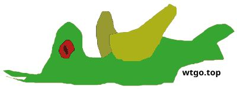

Are crows more intelligent than humans?
Generally speaking, crows are no more intelligent than humans. However, in certain specific cognitive abilities (such as logical reasoning, tool usage, and social learning), crows perform exceptionally well, even surpassing some primates. Therefore, they are called "Einsteins of birds".
Where does the intelligence of crows lie?
Tool usage and manufacturing: New Caledonian crows can make hooks with branches and metal wires to feed and will independently choose the most suitable tools.
Causal reasoning: The ability to make transitive reasoning through "A is heavier than B, B is heavier than C →A is heavier than C "is a skill that only a few animals possess.
Face recognition and social learning: They can remember specific faces for many years and also pass on information about "dangerous people" to their peers.
Problem-solving: Can raise the water level by throwing stones (similar to Aesop's Fables), and know how to use a vehicle to run over nuts and then wait at a red light to pick them up.
Compared with human
absolute intelligence: the human brain is larger in volume, the prefrontal lobe is more developed, and it possesses language, abstract thinking, and complex cultural inheritance, which are far beyond the reach of crows.
Relative intelligence: In terms of brain-body ratio and neuronal density, corvids (crows, ravens, magpies) rank among the top in the bird family. In some individual tests, they are not inferior to chimpanzee pups or 3-4-year-old children, but their overall cognitive level is still lower than that of humans.
summary
Crows are not smarter than humans, but rather a representative of birds learning intelligence, showing wisdom in specific fields close to that of higher mammals. To say it is "highly intelligent" means that it is at the top level in the animal kingdom, rather than surpassing humans.
Tue May 26 09:42:07 AM UTC 2026
Boost Quickbook
https://www.boost.org/doc/libs/latest/doc/html/quickbook.html
wtgo.top
https://wtgo.top